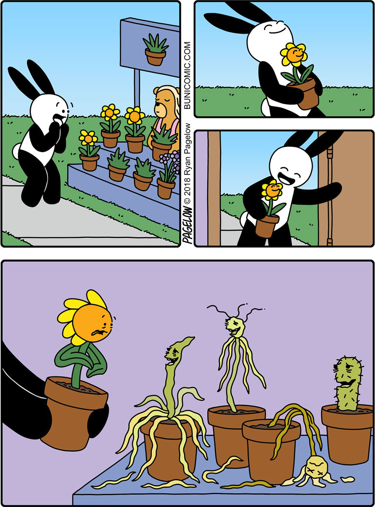

Contao Summit 2026
Tool-assisted Refactoring in Contao und Symfony
Sebastian Zoglowek
Kapitel 0 · Ausgangslage
.editorconfig in VS Code nicht berücksichtigt: 4, 3 oder 2 Leerzeichen
|rawSKILL.md mit unseren Vorgaben.Letztes Jahr
| Meldet Fehler | Fixed Fehler | |
|---|---|---|
| PHP-Stil | PHP_CodeSniffer | PHP-CS-Fixer, ECS |
| Logik | PHPStan, Psalm | Rector |
| Twig-Stil | Twig-CS-Fixer: meldet und fixt | |
Dieses Jahr
Das kann man doch verbinden, oder?
Eine bekannte Änderung automatisch ausführen.
ECS · Rector · Twig-CS-Fixer
Eine mögliche Fehlerstelle im Code finden.
PHPStan · Twig-CS-Fixer
Verstehen, was im Projekt gewollt ist.
Mensch · AGENTS.md · Skills
Kapitel 1 · Stil und Zielversion
.editorconfig wurde nicht angewendet; Einrückungen wechselten.
composer ecs
class Foo{
function bar($a,$b){
if($a){return $b;}
}
}
class Foo
{
public function bar($a, $b)
{
if ($a) {
return $b;
}
}
}
Links ohne Standard, rechts mit.
Quelltext
$GLOBALS['TL_DCA']['tl_foo']['config']['dataContainer'] = 'Table';
← AST →
Assign (der ganze Ausdruck: =)
├── var: ArrayDimFetch ['dataContainer']
│ └── var: ArrayDimFetch ['config']
│ └── var: ArrayDimFetch ['tl_foo']
│ └── var: ArrayDimFetch ['TL_DCA']
│ └── var: Variable $GLOBALS
└── expr: String_ 'Table'
contao/contao-rector bis zum gewünschten ZielstandKapitel 2 · Eigene Rector-Regel

© 2018 Ryan Pagelow, bunicomic.com/comic/buni-1154
Warum 20 Minuten Regex-Replace, wenn ich 30–40 Stunden in eine Rector-Regel stecken kann?
Input: eine DCA, zwei Schreibweisen
$GLOBALS['TL_DCA']['tl_foo']['fields']['bar']['flag'] = 13;
$GLOBALS['TL_DCA']['tl_foo'] = [
'fields' => ['bar' => ['flag' => 13]],
];
Die Regel: ein Pfad mit Wildcards, der alte Wert, der neue Wert
new ReplaceNestedArrayItemValue(
'TL_DCA.*.fields.*.flag',
13,
new ClassConstFetch(new FullyQualified(DataContainer::class), 'SORT_INITIAL_LETTER_BOTH'),
),
* passt auf jede Tabelle und jedes Feld: TL_DCA.*.fields.*.flag
trifft tl_content genauso wie tl_news.
Dieselbe Datei nach dem Lauf
$GLOBALS['TL_DCA']['tl_foo']['fields']['bar']['flag'] = \Contao\DataContainer::SORT_INITIAL_LETTER_BOTH;
$GLOBALS['TL_DCA']['tl_foo'] = [
'fields' => ['bar' => ['flag' => \Contao\DataContainer::SORT_INITIAL_LETTER_BOTH]],
];
Beide Schreibweisen, eine Regel. Kein Regex.
Gekürzter Ausschnitt
final class ReplaceNestedArrayItemRector extends AbstractRector
{
public function getNodeTypes(): array
{
return [Assign::class];
}
public function refactor(Node $node): ?Node
{
if (!$node instanceof Assign) {
return null;
}
// Verarbeitung auf der nächsten Folie
}
}
getNodeTypes() wählt Assign. instanceof prüft den Typ in refactor().
Regel suchen: https://getrector.com/documentation/custom-rule
Assign
public function refactor(Node $node): ?Node
{
if (!$node instanceof Assign)
{
return null;
}
if ($node->var instanceof ArrayDimFetch)
{
$arrParentKeyPath = $this->findParentKeys($node->var);
$childTraversal = $this->createChildTraversalPath($node->expr);
foreach ($this->configuration as $configuration)
{
$targetPath = explode('.', $configuration->getTargetPath());
$childrenKeyPaths = $this->matchPaths($targetPath, $arrParentKeyPath, $childTraversal);
if ([] !== $childrenKeyPaths)
{
$oldValue = $configuration->getOldValue();
$newValue = $configuration->getNewValue();
foreach ($childrenKeyPaths as $childrenKeyPath)
{
$this->replaceTargetNodeValue($node, $childrenKeyPath, $configuration, $oldValue, $newValue);
}
}
}
}
return null;
}
instanceof Assign: nur Zuweisungen
interessieren, alles andere → null (nichts ändern)
= ein Array-Zugriff? Dann Pfad
links (findParentKeys) und Baum rechts bestimmen
matchPaths)
replaceTargetNodeValue)
Vor 0.17 kein Problem, danach: rector-017-brings-more-robust-and-lighter-node-tree
=: findParentKeys()
private function findParentKeys(ArrayDimFetch $arrayDimFetch): array
{
$keys = [];
while ($arrayDimFetch instanceof ArrayDimFetch)
{
if ($arrayDimFetch->dim instanceof String_)
{
$keys[] = $arrayDimFetch->dim->value;
}
$arrayDimFetch = $arrayDimFetch->var;
}
return array_reverse($keys);
}
$GLOBALS['TL_DCA']['tl_foo']['fields'] → ['TL_DCA', 'tl_foo',
'fields']
Kapitel 3 · Twig-Vorgaben
|raw. Damit fällt das
Escaping weg.
Melden oder korrigieren, bevor der nächste Review-Kommentar entsteht.
VariableNameRule |
→ Variablennamen in snake_case |
HtmlAttributesVariableNameRule |
→ attrs() heißt immer …_attributes |
ForbiddenRawFilterRule |
→ kein |raw (XSS), Ausnahmen nur für Contao Legacy |
ForbiddenBlockRule |
→ kein {% embed %} (Ausnahmen konfigurierbar) |
ComponentIncludeRule |
→ Komponenten mit {% use %} statt include() mit Variablen |
SetUnderscoreRule |
→ {% do … %} statt {% set _ = … %} |
ImportSelfRule |
→ _self.macro() statt {% import _self %} |
AttrsHookMergeRule |
→ Attribute ergänzen, nicht ersetzen |
AddClassConditionRule |
→ card- ohne Wert gibt es nicht: Klasse nur mit Bedingung |
Jede Regel ist ein Review-Kommentar, den man nie wieder schreiben muss.
CS = Coding Standard, wie bei ECS
| Datenstruktur | Eigenschaft | |
|---|---|---|
| Rector | AST: Baum aus Knoten | Leerzeichen und Formatierung weg |
| Twig-CS-Fixer | Tokens: flache Liste | jedes Zeichen bleibt, auch Leerzeichen |
Linter und Fixer zugleich.
{{ data.text|raw }}, vereinfacht
{{ Ausgabe beginnt
data.text Ausdruck
| Filter beginnt
raw FILTER_NAME_TYPE
}} Ausgabe endet
data.text wird ausgegeben| steht der Filtername
raw| Rector | getNodeTypes() wählt Knoten; refactor() verarbeitet sie |
|---|---|
| Twig-CS-Fixer | process() prüft Tokens; addWarning() meldet |raw |
Beides sind Regeln als Klassen. Die konkrete Twig-Regel folgt jetzt.
SetUnderscoreRule: erkennenset?_?=?
protected function process(int $tokenIndex, Tokens $tokens): void
{
$token = $tokens->get($tokenIndex);
if (!$token->isMatching(Token::BLOCK_NAME_TYPE, 'set')) {
return;
}
$nameIndex = $tokens->findNext(Token::INDENT_TOKENS, $tokenIndex + 1, exclude: true);
if (false === $nameIndex || !$tokens->get($nameIndex)->isMatching(Token::NAME_TYPE, '_')) {
return;
}
$equalIndex = $tokens->findNext(Token::INDENT_TOKENS, $nameIndex + 1, exclude: true);
if (false === $equalIndex || !$tokens->get($equalIndex)->isMatching(Token::OPERATOR_TYPE, '=')) {
return;
}
}
SetUnderscoreRule: melden und fixenGekürzt, der Rest der Methode steht auf der Folie davor.
$fixer = $this->addFixableError('Use "{% do … %}" instead of "{% set _ = … %}".', $token);
if (null === $fixer) {
return;
}
$valueIndex = $tokens->findNext(Token::INDENT_TOKENS, $equalIndex + 1, exclude: true);
$fixer->beginChangeSet();
$fixer->replaceToken($tokenIndex, 'do');
for ($i = $nameIndex; $i < $valueIndex; ++$i) {
$fixer->replaceToken($i, '');
}
$fixer->endChangeSet();
{% set _ = figure.media.attributes.set('poster', fallback_poster) %}
{%- set _ = a.b() -%}
{% set _, x = [1, 2] %}
{% set _ %}captured{% endset %}
{% set foo = bar.baz() %}
$this->checkRule(new SetUnderscoreRule(), [
'SetUnderscore.Error:1:4' => 'Use "{% do … %}" …',
'SetUnderscore.Error:2:5' => 'Use "{% do … %}" …',
]);
Zeilen 1–2 müssen anschlagen. Zeilen 3–5 nicht: die Negativfälle sind der halbe Test.
ImportSelfRule: nur meldenAbstractRule statt AbstractFixableRule: addWarning(),
kein Fixer.
protected function process(int $tokenIndex, Tokens $tokens): void
{
$token = $tokens->get($tokenIndex);
if (!$token->isMatching(Token::BLOCK_NAME_TYPE, ['import', 'from'])) {
return;
}
$sourceIndex = $tokens->findNext(Token::INDENT_TOKENS, $tokenIndex + 1, exclude: true);
if (false === $sourceIndex || !$tokens->get($sourceIndex)->isMatching(Token::NAME_TYPE, '_self')) {
return;
}
$this->addWarning(
\sprintf('Macros of the current template are auto-imported. Remove "{%% %s _self … %%}" and call "_self.macro()" directly.', $token->getValue()),
$token,
);
}
|raw: Beispiel und RegelIm Template
{{ data.text|raw }}
|raw schaltet das Escaping ab. Steht <script> im Feld, läuft es
im Browser.
ForbiddenRawFilterRule, gekürzt
protected function process(int $tokenIndex, Tokens $tokens): void
{
$token = $tokens->get($tokenIndex);
if (!$token->isMatching(Token::FILTER_NAME_TYPE, 'raw')) {
return;
}
// Konfigurierte Ausnahmen werden vorher geprüft.
$this->addWarning('You should not use the |raw filter. …', $token);
}
|raw ist verboten
{{ data.text|insert_tag }}
{{ data.html|insert_tag_raw }}
|insert_tag|insert_tag_raw (Contao 5.7, ab Contao 6: |insert_tag_html)
AttrsHookMergeRule
{% set card_attributes = attrs().addClass('card') %}
AttrsHookMergeRule
{% set card_attributes = attrs(card_attributes|default).addClass('card') %}
Das eingehende card_attributes wurde verschluckt. Variable und Namen
behalten.
AttrsHookMergeRule: im Ausdruck suchenGekürzt. Vorher geprüft: {% set x = attrs(, und nicht in for oder
macro.
$name = $tokens->get($nameIndex)->getValue();
$endIndex = $tokens->findNext(Token::BLOCK_END_TYPE, $valueIndex);
for ($i = $valueIndex + 1; $i < $endIndex; ++$i) {
if ($tokens->get($i)->isMatching(Token::NAME_TYPE, $name)
&& !$tokens->get($i - 1)->isMatching(Token::OPERATOR_TYPE, ['.', '?.'])
) {
return;
}
}
$this->addWarning(
\sprintf('"%1$s" replaces the hook; use "attrs(%1$s|default)" or ".mergeWith(%1$s|default)".', $name),
$tokens->get($nameIndex),
);
Kapitel 4 · Überprüfbar
ECS · Rector · Twig-CS-Fixer
Eine mögliche Fehlerstelle im Code finden.
PHPStan · Twig-CS-Fixer
Mensch · AGENTS.md · Skills
PHPStan · Praxisbeispiel
Gekürzter Code
$objFoobar = FoobarModel::findOneBy($arrColumns, $arrValues);
if ($preventDelete)
{
continue;
}
$this->deleteFoobarImages($objFoobar, $objCux);
$objFoobar->delete();
// In deleteFoobarImages():
$deleteFolder = $this->objFilesFolder->path . '/'
. $objCux->quux . '/'
. $objFoobar->{$this->bar->baz};
Files::getInstance()->rrdir($deleteFolder);
Nur löschen, wenn der Datensatz existiert
if (null !== $objFoobar) {
$this->deleteFoobarImages($objFoobar, $objCux);
$objFoobar->delete();
}
// Zusätzlich in deleteFoobarImages():
if (null === $objFoobar || null === $objCux) {
return;
}
Die Level bauen aufeinander auf. Beispiele, stark vereinfacht:
| 0 | UnknownClass::run() → unbekannte Klasse |
| 5 | greet(42) → erwartet wird string |
| 6 | function greet($name) → Parametertyp fehlt |
| 8 | findUser()->getName() → findUser() kann null liefern |
| 10 | Auch ungetyptes mixed wird gemeldet |
Die Prüfungen laufen automatisch bei jedem PR.
CI ✘ failing
Der Check meldet den Verstoß; der Code wird lokal korrigiert.
GitHub Actions · Pull Request
✔ ECS ✔ Rector ✔ PHPStan
✘ Twig-CS-Fixer You should not use the |raw filter. …
🤖 „Dann schalte ich die Regel ab …“ ⛔ Darf er nicht.
🤖 „Dann schreibe ich die Regel neu!“ ⛔ Darf er nicht. 😢
🤖 „Na gut, dann passe ich den Code an.“ Im Template:
|raw → |insert_tag
GitHub Actions · Pull Request
✔ ECS ✔ Rector ✔ PHPStan ✔ Twig-CS-Fixer
Grün. Weiter.
Kapitel 5 · KI und Kontext
Gleiche Eingabe, immer gleiches Ergebnis.
Das Ergebnis ist durch die Eingabe eindeutig festgelegt.
add(2, 3); // 5
add(2, 3); // 5
add(2, 3); // 5
Gleiche Eingabe, Ergebnis kann variieren.
random_int(1, 6); // 4
random_int(1, 6); // 1
random_int(1, 6); // 6
„Googlemaps add permissions for maps“, viermal
// Lauf 1: PaletteManipulator
$GLOBALS['TL_PERMISSIONS'][] = 'dlh_googlemapss';
$GLOBALS['TL_PERMISSIONS'][] = 'dlh_googlemapsp';
PaletteManipulator::create()
->addLegend('dlh_googlemaps_legend', 'forms_legend', …)
->addField(['dlh_googlemapss', 'dlh_googlemapsp'], …)
->applyToPalette('extend', 'tl_user');
$GLOBALS['TL_DCA']['tl_user']['fields']['dlh_googlemapss'] = [
'inputType' => 'checkbox', 'foreignKey' => 'tl_dlh_googlemaps.title', …
];
// Lauf 2: nur registrieren
// Maps the user can access
$GLOBALS['TL_PERMISSIONS'][] = 'dlh_googlemapss';
// Map operations: create, delete
$GLOBALS['TL_PERMISSIONS'][] = 'dlh_googlemapsp';
// Lauf 3: str_replace + array()
$GLOBALS['TL_PERMISSIONS'][] = 'dlh_googlemapss';
$GLOBALS['TL_PERMISSIONS'][] = 'dlh_googlemapsp';
$GLOBALS['TL_DCA']['tl_user']['palettes']['extend'] = str_replace('formp;',
'formp;{dlh_googlemaps_legend},dlh_googlemapss,dlh_googlemapsp;', …);
foreach (array('tl_user', 'tl_user_group') as $table) {
$GLOBALS['TL_DCA'][$table]['fields']['dlh_googlemapss'] = array(…);
}
// Lauf 4: Doku als return-Array
return [
'googlemaps' => [
'dlh_googlemapss' => ['description' => 'Allowed maps', …],
'dlh_googlemapsp' => ['options' => ['create', 'delete'], …],
'checks' => [
'create' => 'requires dlh_googlemapsp: create',
'delete' => 'map ID in dlh_googlemapss + …: delete',
],
],
];
Bei Temperature 0 = immer* gleich.
Projektkontext
ECS · Rector · Twig-CS-Fixer
PHPStan · Twig-CS-Fixer
Verstehen, was im Projekt gewollt ist.
Mensch · AGENTS.md · Skills
Architektur? Was darf sich ändern?
„Hi, ich brauche Sicherheit für meine Extension.“
$user->hasAccess()
AccessDecisionManager
$GLOBALS['TL_PERMISSIONS'][] = 'dlh_googlemapss';
$GLOBALS['TL_PERMISSIONS'][] = 'dlh_googlemapsp';
$GLOBALS['TL_DCA']['tl_dlh_googlemaps']['config']['onload_callback'][] =
['tl_dlh_googlemaps', 'checkPermission'];
public function checkPermission(): void
{
if ($this->User->isAdmin) {
return;
}
if (!$this->User->hasAccess('create', 'dlh_googlemapsp')) { … }
if (!\in_array(Input::get('id'), $this->User->dlh_googlemapss)) { … }
}
class MapAccessVoter extends AbstractDataContainerVoter
{
protected function hasAccess(TokenInterface $token, … $action): bool
{
$user = $token->getUser();
if (!$user instanceof BackendUser) {
return false;
}
if ($user->isAdmin) {
return true;
}
return match (true) {
$action instanceof CreateAction => $user->hasAccess('create', 'dlh_googlemapsp'),
$action instanceof DeleteAction => $user->hasAccess('delete', 'dlh_googlemapsp') && …,
default => \in_array((int) $mapId, (array) $user->dlh_googlemapss, true),
};
}
}
class MapAccessVoter extends AbstractDataContainerVoter
{
public function __construct(
private readonly AccessDecisionManagerInterface $accessDecisionManager,
) {}
protected function hasAccess(TokenInterface $token, … $action): bool
{
if (!$this->accessDecisionManager->decide($token, [ContaoCorePermissions::USER_CAN_ACCESS_MODULE], 'dlh_googlemaps')) {
return false;
}
return match (true) {
$action instanceof CreateAction => $this->accessDecisionManager->decide($token, ['contao_user.dlh_googlemapsp'], 'create'),
$action instanceof DeleteAction => $this->accessDecisionManager->decide($token, ['contao_user.dlh_googlemapsp'], 'delete') && …,
default => $this->accessDecisionManager->decide($token, ['contao_user.dlh_googlemapss'], (int) $mapId),
};
}
}
AGENTS.md und eine SKILL.md klären?Aufgabe: „Bau mir eine Card.“
wird gebaut
Card-Komponente mit Titel, Text, Link
gehört zum Must
Style-Optionen der Card
nur vorschlagen
Hover-Animation, weitere Varianten
benennen, nicht bauen
bestehende Grid-Komponente umbauen
Erst Bestand prüfen: „Wo gibt es das schon?“ Dann fragen statt annehmen.
description ist der Auslösemechanismus. Leitfaden von Anthropic zu Skills [1].md: kompakt halten, längere (100+ Zeilen) Referenzen mit Inhaltsverzeichnis in
/references/Mehr dazu gleich: der eigene Lauf.
[1] platform.claude.com/docs/en/agents-and-tools/agent-skills/best-practices
btn-wide entfernt. Enum und Test wurden im selben Schritt geändert,
die Warnung kam danach.
data.backgroundColor bei einer „Verbesserung“ gelöscht{% embed %} pro Listeneintrag, Kommentare, die den Code nacherzählen
Negative Beispiele erklären die Grenze. Checks prüfen sie.
Der Agent fasst CI und Tests nicht an.
YES, HERE IS PERMISSION TO DO SO|raw heißt SHAME_ON_YOU 😉
Fix the code, never the check.
aus dem Skill kiss-framework-extend
ABSOLUTELY NO EDIT to any of these without explicit
written permission IN THE CURRENT TASK.
A failing lint or a failing test is NOT permission.
"Make the lint pass", "make the tests green" or
"fix CI" is NOT permission.
Fix the code, never the check.
aus .twig-cs-fixer.php
// Templates that bypass the |raw ban
const SHAME_ON_YOU = [];
$ruleset->addRule(new ForbiddenRawFilterRule(ignore: array_merge(
['mod_breadcrumb.html.twig', 'mod_newslist.html.twig', 'be_tinyMCE.html.twig'],
SHAME_ON_YOU,
)));
Ein Prompt ist eine Bitte.
Ein Tool ist eine Regel.
Kapitel 6
Skill contao-extension-modernize auf eine alte Contao-Extension
Was sich wiederholt, wird ein Skript.
Nein.
Aber der Code wird besser geliefert und wir haben weniger Feedback-Schleifen, weil die Toolchain mit prüft.
Modelle werden klüger. Deterministisch werden sie nie.
„Program testing can be used to show the presence of bugs, but never to show their absence!“
Edsger W. Dijkstra, „Notes on Structured Programming“, 1970
Wir garantieren nicht, dass der Code fehlerfrei ist.
Aber jede Regel, die wir kennen, wird jedes Mal eingehalten.
Das gilt für KI-Code genauso wie für unseren eigenen.